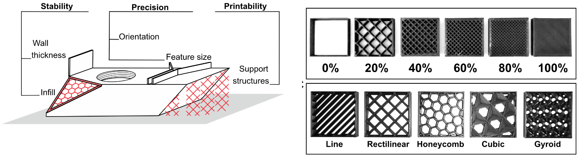
A Field Guide to 3D Printing
A delightfully useful paper centered on 3D printing of microscopes has been written by Mario Del Rosario, Hannah Heil, Afonso Mendes, Vittorio Saggiomo and Ricardo Henriques. The paper covers a bevy o…

Colosseum: open source automated fraction collector
In a follow-up to my all time favorite post, Protein Purification on a Budget: Technical Tuesday , today we are covering a design for a fraction collector for <$100. In their recent preprint, Low-cost…

Upgrade a 2-photon microscope with high-speed FLIM for $2352
Fluorescence-lifetime imaging microscopy (FLIM) is a microscopy technique used to measure the lifetime of a fluorophore rather than its intensity. Sensitive to the sample region’s micro-environment, l…

$6 Printed Mini Centrifuge
This 3D printed design for a mini centrifuge caught our eye as a lab hack that is reminiscent of the early days of this blog ( UV lamp , Sillouette design cutter ). Mini centrifuges are ubiquitous in …
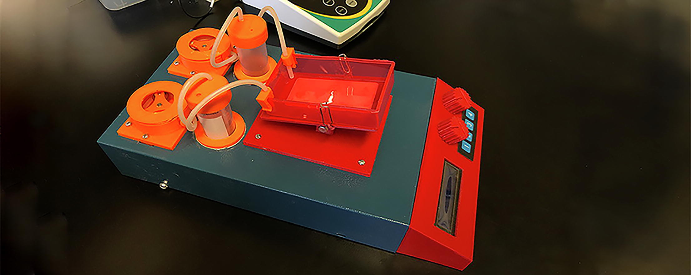
Automated Western Blotting
Western Blots are a ubiquitous technique in biological and biochemical laboratories used to detect a specific protein in a sample using antibody binding. Running a western blot is one of the more mund…

A low cost microfabrication toolbox
If you are interested in working with microfluidics and are having difficulty getting started, check out a paper by Jérôme Charmet, Rui Rodrigues, Ender Yildirim, Pavan Challa, Benjamin Roberts, Rober…

The Science Cheep - #5
Updates in the DIY open-source world of science from the past week! Sign up for our newsletter here . PAPERS A cost-efficient approach for simultaneous scanning electrochemical microscopy and scanning…
The Science Cheep - #4
Welcome to The Science Cheep, written for Lab On The Cheap , giving you all the updates in the DIY open-source world of science from the past week. Sign up for our newsletter here . NEWS UC makes Open…
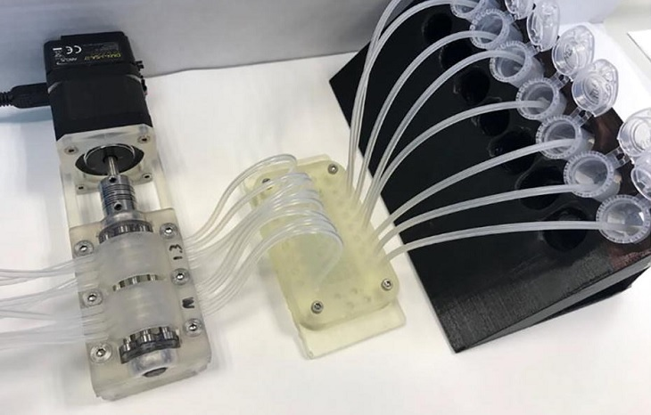
A $400 SLA-3D-printed peristaltic pump for multi-channel systems
The FAST Pump is an elegant, low cost, small, and easy to fabricate alternative to commercial peristaltic pumps which will cost you between $140 to $400 depending on quality and DIY considerations. De…
The Science Cheep - #3
Welcome to The Science Cheep, written for Lab On The Cheap , giving you all the updates in the DIY open-source world of science from the past week. Sign up for our newsletter here . NEWS Museums finan…
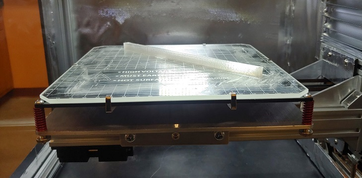
Cerberus: $1000 Open Source High Temperature 3D Printer
3D printers commonly use materials that have low deformation temperatures to make printing with these materials easier. This is problematic if you need to thermally sterilize a 3D printed part. The so…
The Science Cheep – #2
Lab On The Cheap The Science Cheep - June 8th 2020 Welcome to (working title) The Science Cheep, written for Lab On The Cheap, giving you all the updates in the DIY open-source world of science from t…
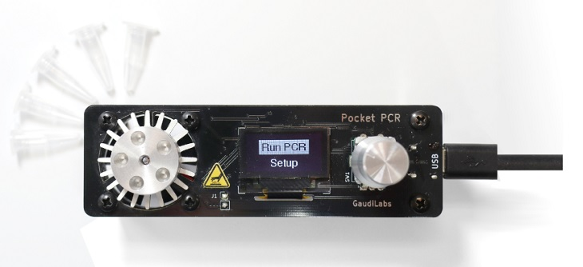
PocketPCR: a $100 PCR Kit
We've covered cheap DIY PCR solutions a couple of times , but there's always room for one more PCR device. PocketPCR from the wonderful GaudiShop is a $110 PCR kit. The project has a well thought out …
The Science Cheep - #1
Welcome to (working title) The Science Cheep, written for Lab On The Cheap, giving you all the updates in the DIY open-source world of science from the past week.…
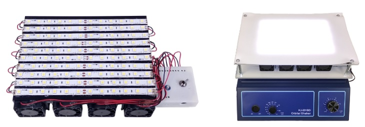
Modifying an Orbital Shaker for bottom-illumination
This is an orbital shaker: There are some DIY ways to make an orbital shaker. One thing an orbital shaker is used for is growing biological samples. In which case control over light, and light cycles,…
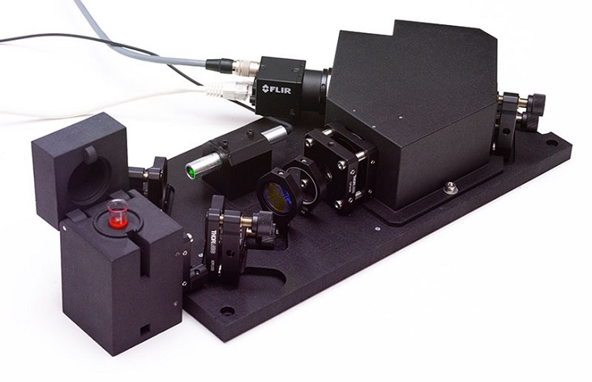
OpenRAMAN, a $3000 DIY Raman spectrometer
Raman spectroscopy is a technique in which light from a laser interacts with a sample to shift the laser wavelength. Recording the shifts with a spectrometer gives information about the sample. We've …
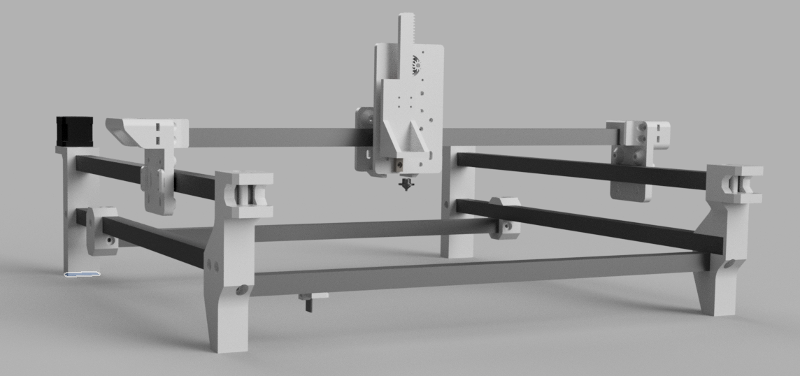
An open source pick-and-place machine for $500
Pick-and-place machines are used to quickly and precisely place electronic components onto printed circuit boards . The open source IndexPnP with software powered by OpenPnP is a new cheap DIY pick-an…

DMCdrive: a $10 micro-drive system for electrophysiology & optogenetics
In the field of neuroscience, micro-drive systems are used to position electrodes in order to make electrophysiology recordings. The DMCdrive is an open-source multi- tetrode for electrophysiology tha…
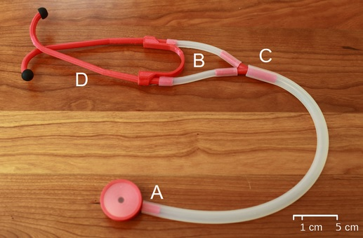
3D Print a Stethoscope
Here at Lab On The Cheap HQ we've received a few requests to look into ways that people might easily and cheaply transmit audio from a stethoscope over their phone to a medical practitioner they are t…

Hack a kitchen scale for lab use for just $20
Common digital kitchen scales have a surprisingly high sampling rate in their sensor, but any data logging using a kitchen scale is limited to the sampling rate of the scientist writing down the data.…
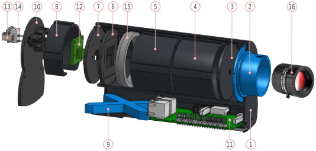
Hyperspectral Imaging for $500
Hyperspectral imaging refers to imaging in which a spectrum is acquired for each pixel in a captured image. A paper by Jairo Salazar-Vazquez and Andres Mendez-Vazquez details an easy to assemble hyper…
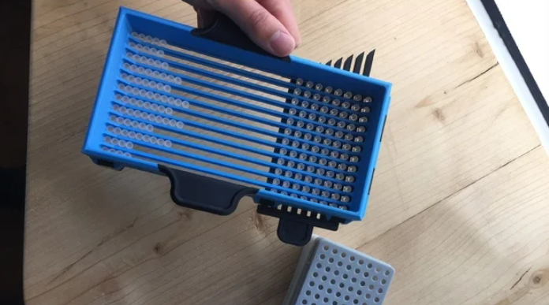
3D Print a Pipette Tip Sorter!
EDIT: New designs are now available for more pipette tips. 10 uL tips: https://www.thingiverse.com/thing:4256563 200 uL tips: https://www.thingiverse.com/thing:4268044 If you are using pipette tips th…
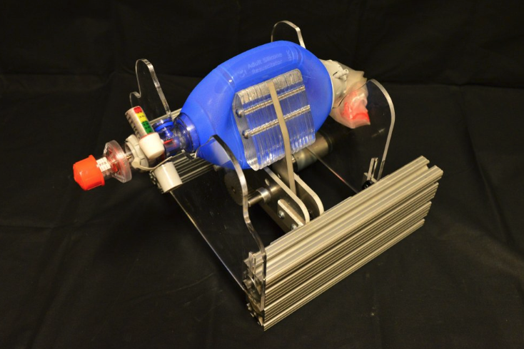
Ventilator for <$100: MIT E-Vent
In the most high stakes Lab on the Cheap project to date, a team of researchers is working on developing an open design for an emergency ventilator. These life-saving machines are in short supply at h…
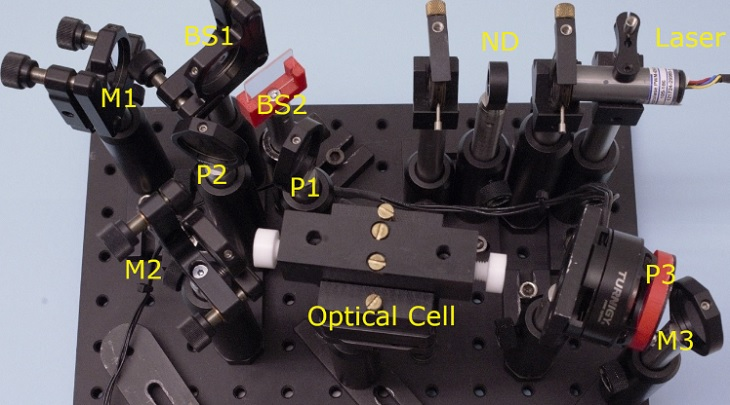
Make a polarimeter for $350
A polarimeter is used to characterize a sample by measuring the rotation of polarized light when it interacts with the sample. They can cost upwards of ~$10,000, but a $350 DIY high-resolution polarim…

OpenPlant toolkit
A paper from Jim Haseloff's lab on a low maintenance model plant for bioengineering. The paper describes the process for maintaining genetic lines in the plant Marchantia polymorpha without the need f…
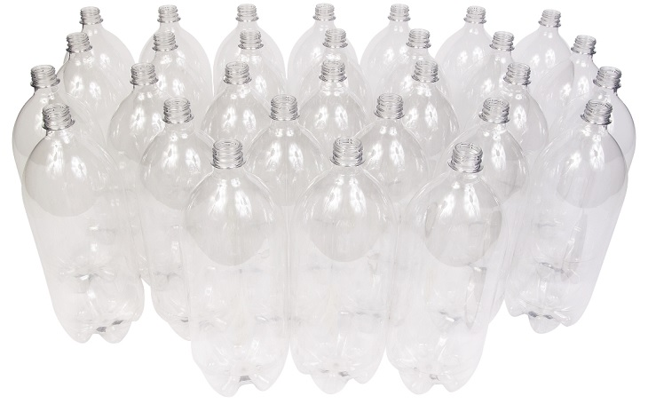
Soda bottles as disposable culture vessels
This week Professor Christine Morrison at the Colorado School of Mines shared a picture on twitter in which she was using 2-liter plastic pop bottles to culture bacteria in a shaker instead of using g…
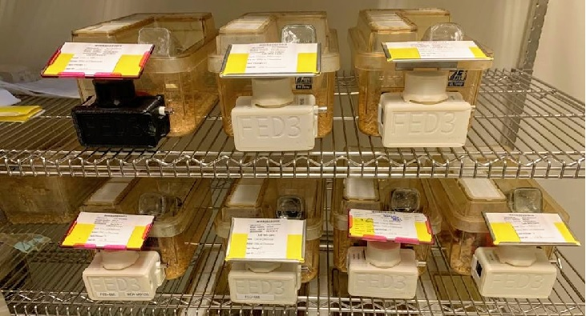
FED3, an open source Feeding Experimentation Device that you can DIY or just buy!
The Feeding Experimentation Device v.3 (FED3) is a smart pellet dispensing device originally designed for training mice on nose-poking tasks. Contributors to the product include Lex Kravitz, Sophi Kra…
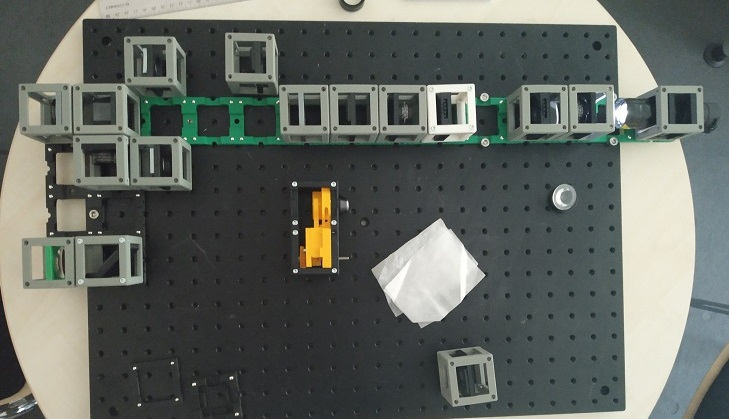
UC2 CoreBOX: Flexible Instructional Microscopy for $250
CoreBOX is a neat open resource for teaching microscopy and optics from the folks at UC2, Swen Carlstedt, Benedict Diederich, Barbora Marsikova, Rene Lachmann and others . The setup was designed for t…
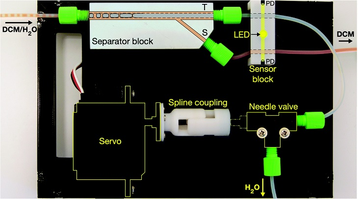
A DIY $125 liquid–liquid separator
Separating mixtures of immiscible liquids is a critical process in flow chemistry. Andrew Harvie, Jack Herrington, and John deMello have written a paper detailing how to make a useful piece of equipme…
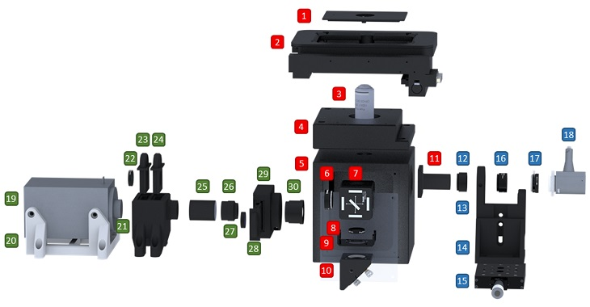
MiCube: A modular fluorescence microscopy framework
miCube , not to be confused with µCube , is an a open and modular framework for the design and assembly of florescence microscopy optical devices, including devices with TIRF and widefield as well as …
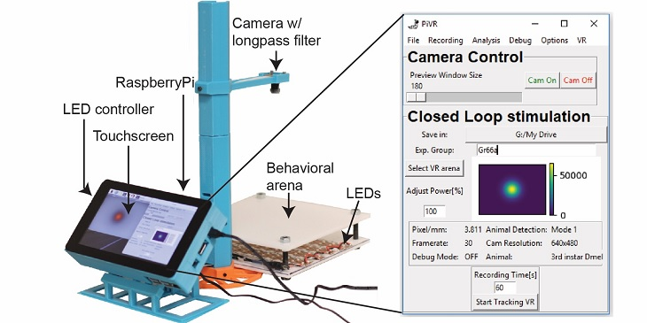
PiVR: $415 to create a VR platform for small creatures
PiVR stands for Raspberry Pi Virtual Reality system. It's an open-source design published by David Tadres and Matthieu Louis that allows dynamic closed-loop experiments to study unrestrained optogenet…
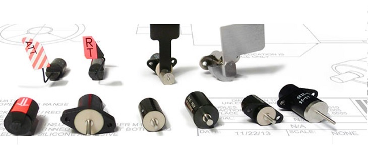
Shutters from Brandstrom Instruments
Charles-Anthony Fortin of photonetc writes in response to More DIY Opitcal Shutters , to tells us about Brandstrom Instruments . They sell self-restoring solenoids for as low as $250, and bare aluminu…
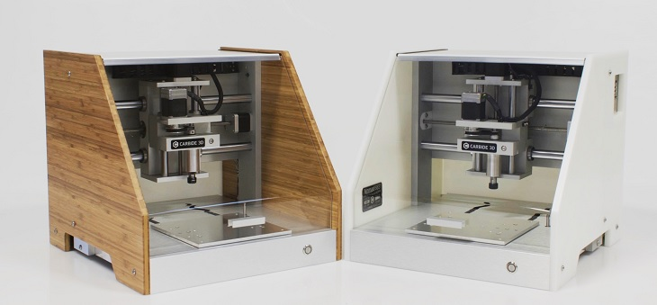
Cheap Desktop Micromills for Microfluidics
One way to make microfluidic devices, is to use a milling machine. A paper by Ali Lashkaripour, Ryan Silva and Douglas Densmore compares three micromilling machines (tiny milling machines), evaluated …

AttoBright: A single-molecule confocal system built from a 3D-printed scaffold
The AttoBright is a 10x20 cm single-molecule confocal system capable of single photon counting and fluorescence correlation spectroscopy. The scaffolding is designed to minimize the amount of optical …
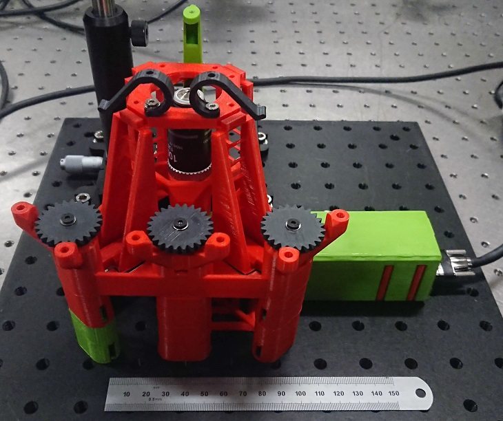
$1200 for a Super Resolution Capable Microscope
A new paper shows the practicality of using Super Resolution Radial Fluctuation (SSRF) on an OpenFlexure Microscope . SSRF microscopy is a form of Super Resolution microscopy that relies on a post-pro…

Make Your Own Portable Laminar Flow Hood
You can make your own portable laminar flow hood from a Vacuum Cleaner, some plexiglass, and a HEPA Filter. A thorough article on instructables walks you through the process . The authors paid $200 in…

An Extremely Cheap Venturi Vacuum Pump
A Venturi vacuum pump works by flowing water through a tube that has a narrow point where a second tube is connected. The faster speed of water through the narrow point pulls a vacuum in the connected…

Fluorescent Dyes
A new spin-off of Click Chemistry Tools called Fluoroprobes , is creating generic versions of fluorescent dyes. Our lab recently switched from buying Alexa Fluor® 647 NHS Ester from Thermo Fisher ($33…

Easy Expansion of Field of View in Two-Photon Set Up
Two-photon micrsocopy is useful for reducing photo-damage and seeing deep into tissue samples. First patented in 1990 by Winfried Denk and James Strickler , it's a technique that has been used for dec…
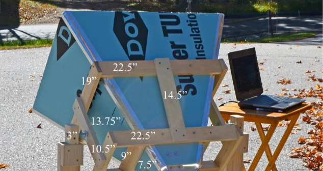
Backyard Radio Astronomy
Want to build yourself a radio telescope? The Society of Amateur Radio Astronomers has a rich catalog of tutorials to build them on the cheap . Of particular interest are instructions to create an "It…

An open-source combiner for inexpensive laser diodes
Scientific-grade lasers are incredibly costly components of modern microscopes . Inexpensive laser diodes are much cheaper, often less than $100, but they have high divergence and an asymmetrical inte…

Reddress Sunday - Upcoming Changes to the Website
Happy Sunday Everyone! It's been almost a year since we've written our last Reddress Sunday , the LabOnTheCheap errata. Originally we anticipated that we would have to publish corrections to previous …
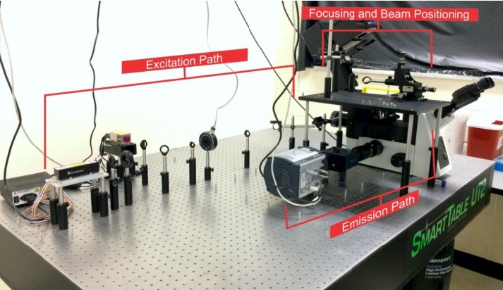
A step-by-step guide to building a prism-type TIRF microscope
Total Internal Reflection Florescence (TIRF) Microscopy is a technique used to observe a very thin region of sample directly at the surface of an interface (coverslip) without obtaining background int…

ManufacturingReports.com Helpful reviews of PCB manufacturers
On this website, at least 20 of the Do-It-Yourself pieces of research equipment that we have covered involve Printed Circuit Boards (PCBs). We once suggested using EasyEDA to design and order these co…
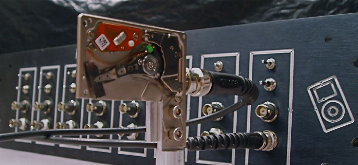
More DIY Optical Shutters
Several months ago we wrote a short write up about making a cheap optical shutter out of a hard drive disk controlled via Arduino. Since then we have had two Uniblitz shutters fail. We have now seen 6…
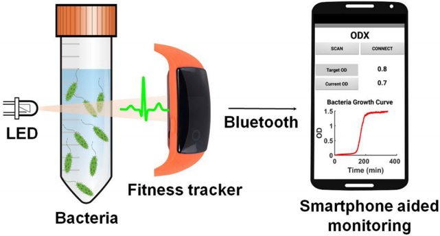
ODX: $25 For Turbidity (OD) Measurements
A couple of weeks ago we covered MicrobeMeter . At $420 it's not exactly pennies, but you can buy it pre-built or as an easy DIY kit. For a similar price, we also covered a user friendly low-cost turb…
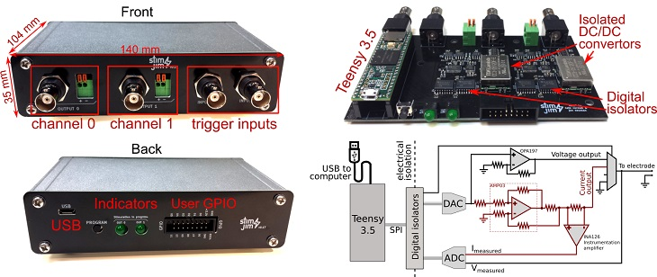
Stimjim: Open Source Electrical stimulation for $200
Neural stimulators can cost thousands of dollars. But why buy them when you could build a StimJim for just $200? StimJim is a dual-channel open-source electric stimulator that combines both function g…
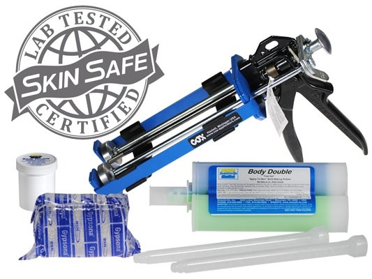
Cheap Silicone Rubber Sealants
Labrigger has a terrific post about replacing the Kwik-Cast platinum-cure silicone elastomer ($106 for 5 mL) with Body Double Fast Set at ($30 for 400 ml). Depending on your dispensary needs, you migh…

MicrobeMeter: A cheap Turbidimeter
MicrobeMeter is a compact turbidimeter designed to measure aerobic and anaerobic microbial growth dynamics. A formal description of the device is available on bioRxiv . You can buy one pre-assembled f…
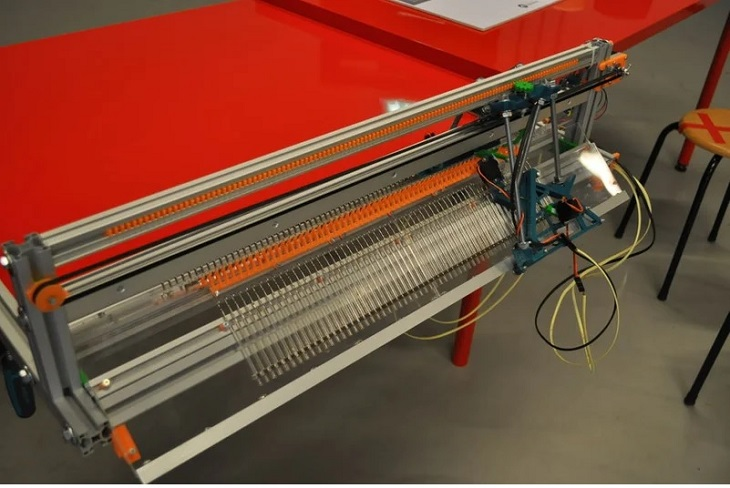
The Wally120 OpenKnit Machine
Inspired by the work of Sabetta Matsumoto and Julianna Abel , we have been looking at programmable automatic knitting machines on the cheap. Several scientists research the creation of unique metamate…

Precision for $100: The OpenFlexure Microscope
The OpenFlexure Microscope is an open-source 3D-printed microscope, based off a precise flexure translation stage . If you're making them in bulk and without the high-res parts, the per-unit price is …
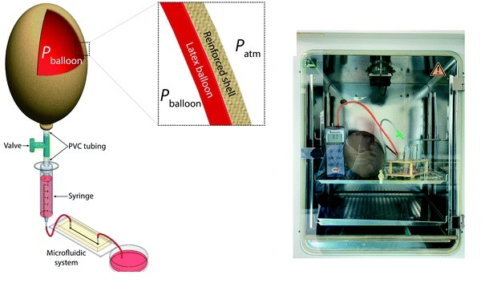
$2 microfluidic pumps made of latex balloons and stockings
Generally, microfluidic systems require an external pump system to operate. Self-sufficient microfluidic systems are microfluidic systems that have all the components they need on the microfluidic dev…
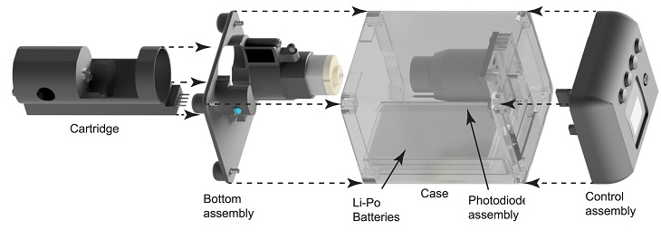
A qPCR device for $300
A real-time polymerase chain reaction (real-time PCR), or quantitative polymerase chain reaction (qPCR), is a modification to normal PCR where one monitors the amplification of a targeted DNA molecule…
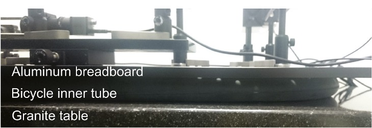
A bicycle inner tube under a breadboard can be sufficient to isolate building vibrations
In many cases equipment is set up on vibration dampened tables. In microscopy, these optical tables, in the shape of a giant metal floating breadboard are ubiquitous, and expensive. These optical tabl…

Bristlebots on the Cheap: Easy-to-Build Active Particles
Bristlebots are simple active particles powered by the vibration of a simple vibrating motor. Their intuitive construction and short list of components make them ideal for demonstrations of basic scie…
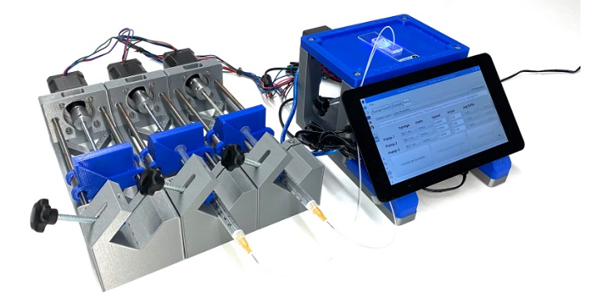
$400 for an open-source syringe pump and microscope system? Meet Poseiden.
Poseidon is a well documented open source microfluidics and imaging system consisting of a set of three DIY syringe pumps for $180 and a compatible microscope for $220. Poseidon is documented in a pap…

OpenFlexure Block Stage: 3D printed sub-micron mechanical precision
OpenFlexure Block Stage is a 3D printed flexure translation stage with sub-micron mechanical positioning. You can get the files to build it on GitHub . The project is 3-axis, short travel, high accura…
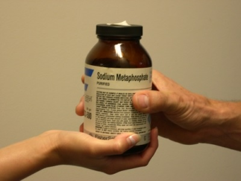
Surplus Chemical Programs
At some universities, Chemical Surplus Programs provide an official channel to leave and take chemicals stocks. If your lab has a chemical that you aren't going to use up, you donate it and save space…
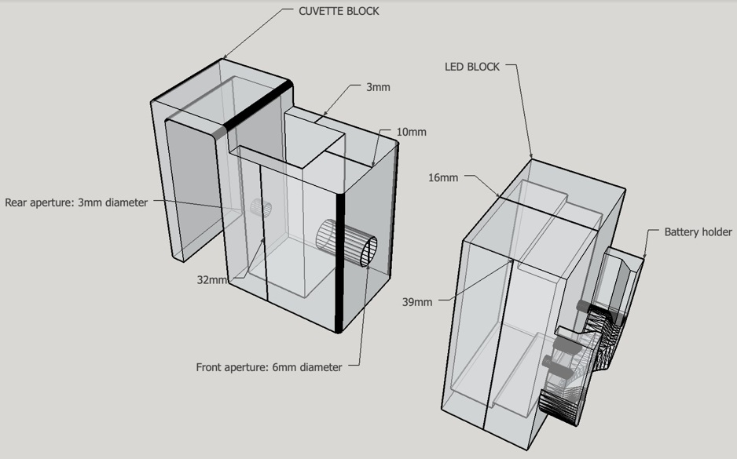
Smartphone spectrophotometer for less than $6
We've covered smartphone florescence spectroscopy before, and we also have a post on building your own Lego spectrometer. In a similar vein check out a dedicated spectrophotometer detailed in a paper …

UV Transilluminators and Imaging on the Cheap
We've written about Gel Electrophoresis before , the punchline of which was that MiniPCR has good gel electrophoresis and imaging system for just $350 . However, that system is for blue light. If you …
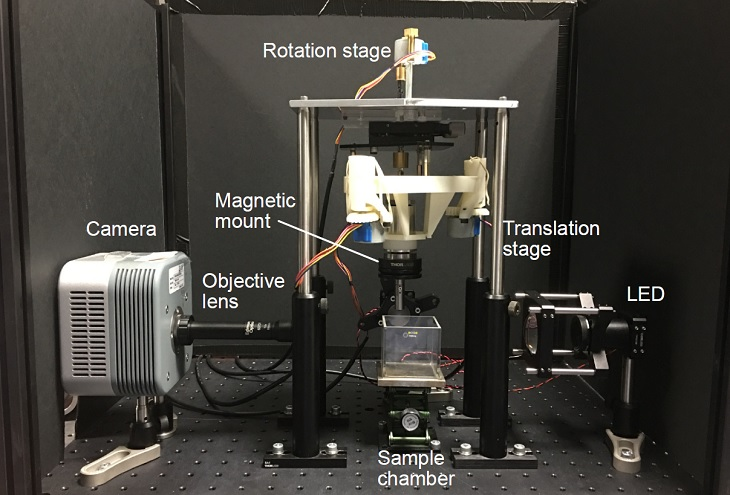
OptiJ: Open-source optical projection tomography for $3000
Optical Projection Tomography (OPT) is a microscopy technique suited to mostly transparent specimens of ~10 mm. OPT requires the collection of a number of images (projections) of a sample taken from d…

GridTape: cutting the cost of serial section Transmission Electron Microscopy systems
GridTape is part of a new system for serial section transmission electron microscopy imaging which excels at high-throughput low-cost nanometer-scale transmission of large volumes. And it's cheap, for…

Incu-Stream: Inverted Bright-Field Microscopy and Automated Mechanical Scanning for just $184
Incu-Stream is an open-hardware microscopy setup designed for bright-field cell imaging of incubated microplates. The design is all laid out in a paper written by Güray Gürkan and Koray Gürkan , with …
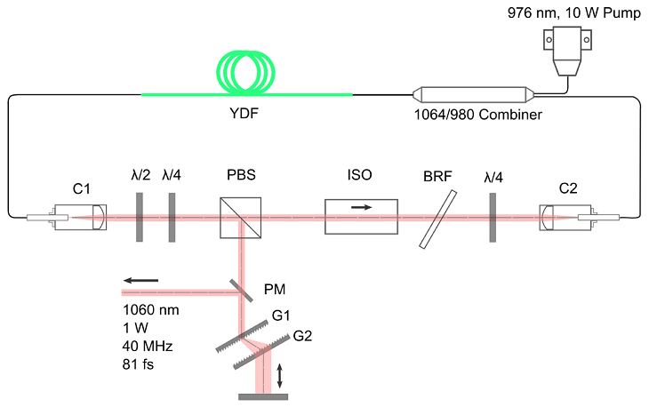
Ytterbium laser for $13,000.
One of the largest obstacles to two-photon DIY microscopy is the acquisition of a pulsed laser system, which generally hits the $100,000 range. Evan Perillo, Justin McCracken, Daniel Fernée, John Gold…

DIY Fluorescence Smartphone Microscopy
We've covered several portable microscopy setups before, including Foldscope , wooden scope , and our favorite these little UV magnifiers . We like the latter so much because it is capable of both whi…
An AIP Tool to help you negotiate salary.
Not sure where to start salary negotiations for a US institution? The American Institute of Physics Statistical Research Center has created a Salary Calculator tool to calculate the mean salary, and i…
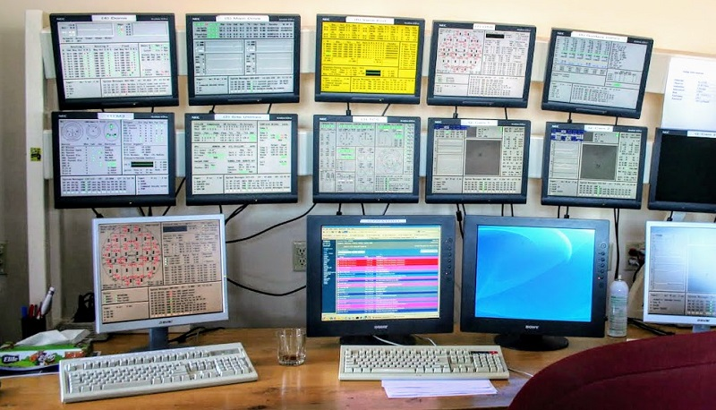
Computers on The Cheap
It's a Technical Tuesday! Today we are going down the rapids of computer purchasing. This is a primer on purchasing computers on the cheap. We start with prebuilt computers (1), then cover acquiring p…
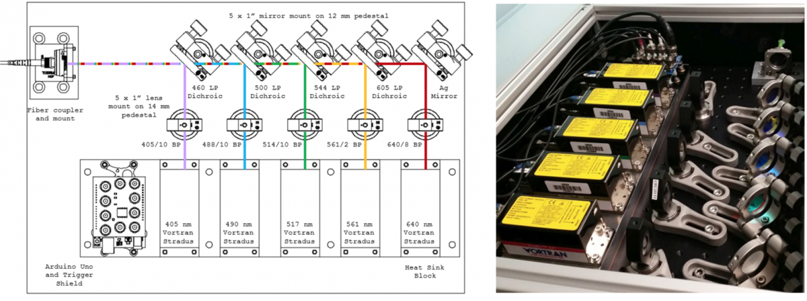
Make your own Fluorescence Microscope with Diode Lasers
Fluorescence microscopy, especially with applications such as TIRF and super-resolution, requires high powered light sources at multiple wavelengths. Here we talk about NicoLase which is "an open-sour…
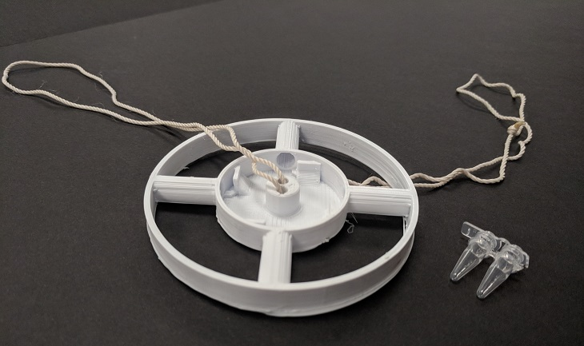
3D -Fuge: A New Hand Powered Centrifuge
Last year at around this time we covered Paperfuge , a card stock based centrifuge that could spin QBC capillary tubes samples at ~10,000 g. Using the principles laid out with Paperfuge, Gaurav Byagat…
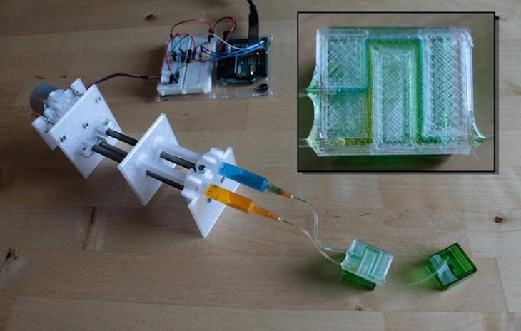
OMIS: An Open Millifluidic Inquiry System
OMIS is a 3D tool for performing small-scale chemical synthesis and analysis. The system is Arduino-based and consists of an automated syringe pump run by a cheap stepper motor and reaction vessels. T…
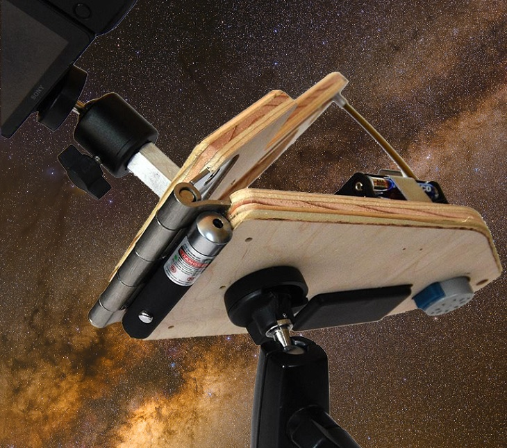
Nyx Tracker for widefield Astrophotography
LabOnTheCheap posts tend to be microscopy heavy , but what about microscopy's extroverted cousin, telescope photometry? One issue while taking long exposures of celestial objects is tracking their diu…
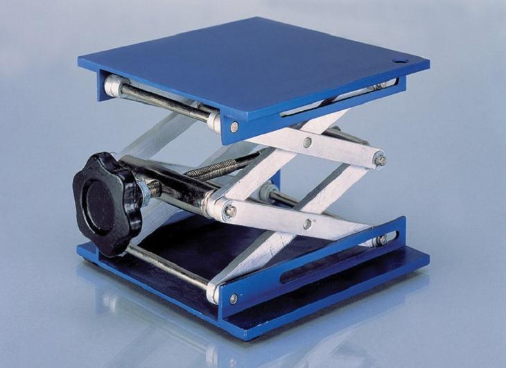
A 3D Printed Platform Jack
Lab Jacks, or Scissor Jacks, are not particularly expensive bits of equipment to begin with. As long as you don't go through VWR, a good 4x4 inch lab jack will cost you $30 , and an 8x8 inch lab jack …

OpenDrop
OpenDrop , now in its third version, is an open source digital microfludics platform based off electrowetting technologies, that can confine and move droplets of liquid. The device is made by GaudiLab…
Lab On The Cheap On The Cheap
Last year for April Fools we wrote about the comparative costs of hiring graduate students, postdocs, and lab techs . A pay structure that has always deeply annoyed me. To keep up with the mildly irre…
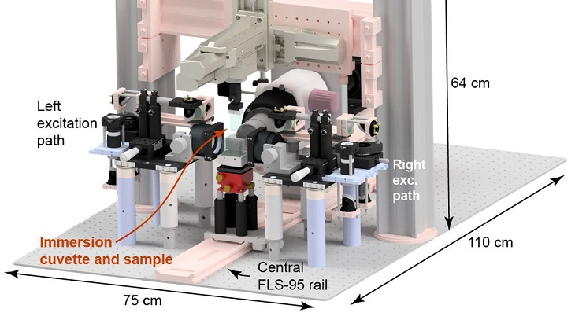
MesoSPIM: An open-source light-sheet microscope for imaging in cleared tissue
The mesoSPIM (mesoscale selective plane illumination microscopy) project creates open-hardware microscopy platforms for imaging cleared tissue samples. The microscopy setup costs between $170,000 to $…
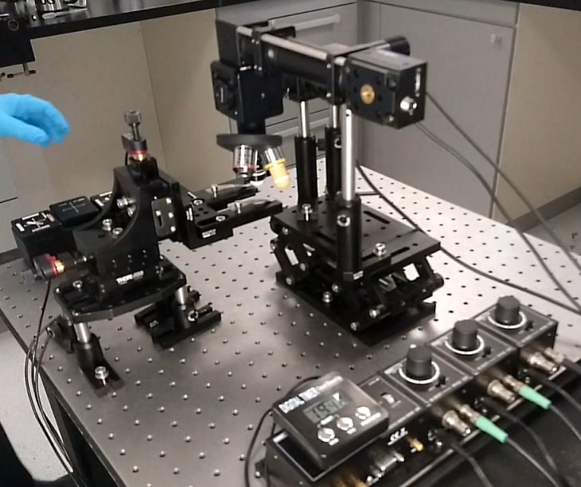
A Workhorse for 18k: DIY Microscopy with Flexiscope
The Flexiscope is DIY microscope that can be easily converted from upright to inverted configurations in "under 30 minutes". It's capable of oblique infrared illumination imaging, multi-channel fluore…
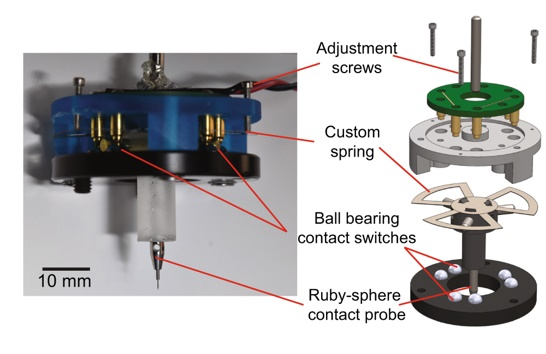
Craniobot
Mice studies are ubiquitous in neuroscience labs and require a huge amount of time and expertise. And both of those things cost big $$$ which makes the field less accessible. University of Minnesota s…

1 Year of Lab On The Cheap!
Today marks one year since the first LabOnTheCheap post. That day was spent taking pictures of equipment around lab , queuing up posts, and trying to figure out twitter (success!) and Instagram (nope,…
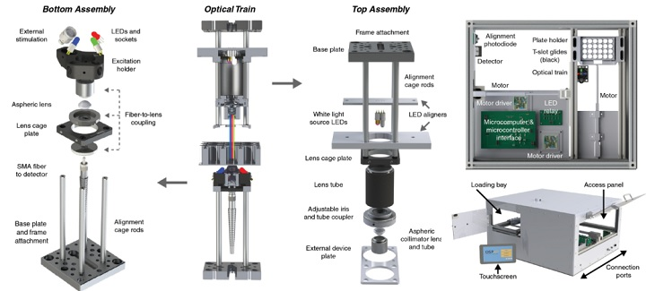
An Open-Source Plate Reader
Plate readers are instruments which are used to detect properties of samples in microtiter plates , via absorbance, fluorescence, and luminescence. Karol Szymula, Michael Magaraci, Michael Patterson, …
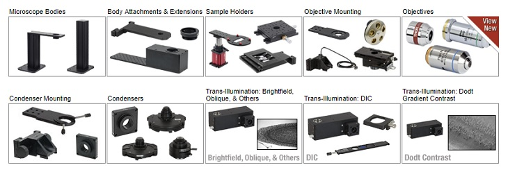
DIY Cerna Components from Thorlabs
Do you love the idea of DIY microscopy but nervous about biting off more than you can chew? Thorlabs' Cerna support for DIY microscopy is a great resource for easing you into it--think of it as traini…

Continuous Flow Systems For Chemistry on the Cheap
Continuous Flow Systems run chemical reactions by continuously flowing reactants past each other. Pumps control fluid channels holding the reagents and chemical reactions occur at intersections of tho…
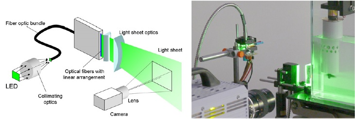
A Simple Strobe Light For Microscopy
Strobe lighting can be used to take crisp images of objects that would normally appear blurred due to their motion during a camera's integration time. They can also be used to image cycling motion wit…
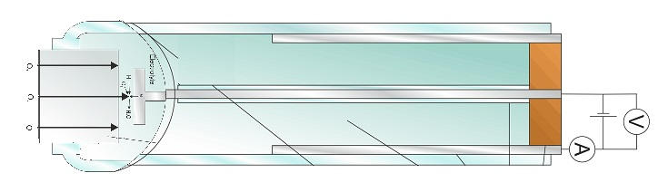
Open-Source Potentiostats for Electrochemical Detection
Potentiometry measures the potential difference between an indicator electrode in a solution and a reference electrode. This provides a quantitative non-destructive measurement of a liquid sample. A c…
Pairing Plastic Printed Parts Professionally with 3DHubs
Last week we saw Holden Lab at Newcastle University start a discussion about using threaded fasteners to secure 3D printed parts. Dr. Robert LeSuer pointed out an extremely thorough discussion on the …
OpenLH: A DIY (DABOIY) Pipetting Robot
The basis of this post is the uArm Swift Pro from uFactory for $750 , an open source robot arm with millimeter level precision in positioning. The folks over at milab have written up a fantastic instr…
Economical High-Temperature Water Bath Control and Monitoring
In the fanciful land of scientific suppliers, a temperature controlled water bath can run you hundreds to upwards of a thousand dollars. These devices are not particularly accurate in their temperatur…
Low-cost Rapid Prototyping of Flexible Microfluidic Devices
The LabOnTheCheap blog came about as a result of explaining to various groups that we made microfluidic chambers using parafilm with a $150 knife printer , and then sealed the microfluidic device with…
ElectroPen: An ultralow-cost piezoelectric electroporator
Electroporation is a powerful alternative to heat shock for delivering small molecules such as plasmids across cell membranes. By application of an electrical field netivetly charged DNA is forced int…

Pretty Good Focus
There is nothing worse than arriving in the morning to find that your overnight data acquisition drifted out of focus two hours in. However, commercial focus stabilization set ups only come on expensi…
Making a Solid State Cooling Block with PipetteJockey
We'd like to feature the work of PipetteJockey , and in this post we do that under the guise of a pseudo-tutorial they have posted on how to hack together a Solid State Cooling Block . The tutorial is…
Smartphone Fluorescence Spectroscopy
Want to do portable florescence spectroscopy on the cheap? Hojeong Yu, Yafang Tan, and Brian T. Cunningham wrote a 2014 paper that demonstrates that a smartphone camera, attached to a set of optical c…
Where the research money goes
Dr. Joe Alvin wrote in to let us know about an interesting blog post on the finances of science by Dr. Michael Johnson, from the Department of Immunobiology at the University of Arizona . The article …
A 3D-printed Droplet Generator
This week the Harris Lab at Brown put up a paper on the creation of a 3D-printed droplet generator. The system is based off a previously published design by David Harris which generates droplets on th…
Accurate Enzymatic Assays in PCR Tubes
To achieve reproducible findings in many enzymatic assays, the substrate and sample must be incubated at specific temperatures without evaporation. If you don't want to pay thousands for a 96-well pla…

μCube: A Framework for 3D Printable Optomechanics
µCube , not to be confused with miCube , is an a framework for the design and assembly of 3D printed housing for optical devices. This includes templates for a Camera , and a light source , along with…
New Lab Startup Discounts
If you building a new lab, or have just relocated, many distributors will offer special discounts just to get you working with them . ThermoFisher , SigmaAldrich , VWR even gives you a "Lab Set up Gui…
Making Vacuum Chambers
If you would like to make an essentially free vacuum chamber with pump, Chris Notap has a useful video on making one out of spare parts using a vacuum pump from a discarded dehumidifier or fridge . Co…

Build-your-own Lego Spectrometer
Check out this open source design for a spectrometer built out of Legos . You can use their designs to 3D print your own Legos and follow the online assembly instructions ( or forge your own path !). …

A Blueprint for Cost-Efficient Localization Microscopy
T his paper, "A Blueprint for Cost-Efficient Localization Microscopy," write it's own summary better than we ever could: "In this study, we questioned every technical high-end component used in standa…
BioBits -- Synthetic Biology for K-12
This is the coolest thing about STEM education I've read in a while. A large team of researchers from Wyss, MIT, and Northwestern have figured out how to use freeze-dried cell parts (which in itself i…
Fluid exchange with LEGOs and ImageJ: NanoJ-Fluidics
We've been over-covering DIY syringe pumps for awhile now, but this LEGO based solutions is a lot more than just the delightful idea to use LEGOs for syringe pumps. NanoJ-Fluidics consists of three pa…
liteTIRF - An Economic TIRF Microscope
We've covered a lot of confocal imaging systems on this blog, as those tend to be the real bank breakers, but have a look at this beautifully compact TIRF platform: the LiteTIRF . The website includes…
An Inexpensive Replacement for Dry Ice in the Laboratory
Some of the writers on LabOnTheCheap have recently moved to UC Santa Barbara, where the Chemistry department sells us dry ice like this: That's right, as 10 lb blocks. There aren't any of those dry ic…
Recording Unconstrained Behaviour and Neural Activity On The Cheap
Kostas Lagogiannis recently emailed us to let us now about a June 2018 paper entailing a cheap method to monitor genetically targeted neural activity and behavior in Drosophila larvae simultaneously .…

Frugal Science in the Age of Curiosity - Manu Prakash
A couple weeks ago we posted about Punch Card Programmable Microfluidics , and long before that we posted about an early version of the Foldscope and we posted on my personal favorite of the bunch, th…
Electronics with EasyEDA
If your working on electronics, consider EasyEDA.com . This resource not only lets you simulate circuits ahead of time but also lets you order electronic parts and Printed Circuit Boards according to …

Moving a Lab On The Cheap
Recently, the authors of Lab On The Cheap have been taking part in a lab relocation across the US of A. We want to write something about this process, but we need some help from you. It's weird that w…

Use Formufits Connectors to Build with PVC Pipe
PVC Pipe is cheap and easy to get your hands on, the only problem in making experimental apparatus with PVC as the frame is that it's generally meant for plumbing and so has limited connectors. Formuf…

Reddress Sunday - On The Move
Happy Sunday Everyone! You may have noticed the posts on LabOnTheCheap have slowed down recently. Why? Well we haven't had much time to write, as the two main authors of this website are in the middle…

Touchscreen Platforms for Rodents
Here's an interesting paper about designing a low-cost touchscreen operant chamber using a raspberry pi . Perhaps the most important takeaway here is that rats performed twice as well in the Med Assoc…
Lab Spend - More information on prices!
/u/P212121 on Reddit pointed us towards Lab Spend a website where you can enter a catalog number to see what other researchers have paid for the same item. The website does require a registration (tha…

The "Merlin" system for prepping large amounts of recombinant DNA
I always find the innumerable applications for Diatomaceous Earth to be amazing. You keep rocking it little diatoms ! In that vein comes a suggestion from Reddit. /u/Tetrazene suggests using the "Merl…

Punch Card Programmable Microfluidics
Here's a nifty idea published in PLOS by George Korir and Manu Prakash . 15 on-chip pumps controlled by a punch card cranked by hand. While the original design is specifically geared towards ease of d…

Using Pressure Cookers as Autoclaves
An autoclave, even a very small one, typically costs ~$4000 . If you find yourself needing one, there's a very old standby . For small batches of agar plates or low-volume media, you can use a pressur…
Some Pointers from Nature
A couple days ago Nature published an article by Elie Dolgin with some ideas on getting a lab started on a budget. The article covers utilizing and bartering with core research facilities, sharing wit…
Little UV Magnifiers
On Amazon you can buy these "60x" magnifying lenses for around $6 . If the quotations didn't tip you off, they are not 60x, we bought a couple different types and in general found them to be between 5…

Technical Tuesday: Penny-Pinching Patterned Projection
Today is Technical Tuesday ! A long delayed segment where we try to dive a little deeper into the actual costs involved in particular scientific techniques. We hope to show where you can save money, a…
Prosthetic Devices and More from the NIH 3D Print Exchange
We'd like to use the Prosthetic Devices curated by e-NABLE to plug the NIH 3D Print Exchange for a second time. These 3D-printable prosthetics allow for DIY assistive devices that can be easily custom…
3D Printed Coverslip Holders and Spinners
Dyche Mullin's lab at UCSF has several handy stl files for 3D printed parts . For instance, these very handy boxes for storing and transporting 22 mm coverslips after they have been cleaned or treated…
Print or Buy: Cheap Pipettes!
When I first joined a lab, someone told me the best pipette was the one that had been calibrated most recently. In that spirit, check out these 3D Printed Pipettes called "Biropettes" from open-labwar…
Motion Control for Cameras
The rare macroscopic post: If you need to control the macroscopic motion of a digital camera consider Dynamic Perception . They used to be a DIY forum and in that spirit they still sell individual par…
More DIY Syringe Pumps: From DropletKitchen
We've covered making your own syringe pumps before , but we'd like to draw your attention to this amazing write up by DropletKitchen to make push-only syringe pumps. Check out DropletKitchen , on thei…

A DIY 2-Photon Microscope for $50k
Here's a fantastic publication on the plans for a open-source 2-photon by David Rosenegger, Cam Tran, Jeffery Ledue, Nin Zhou and Grant Gordon . The parts list they include hits $60k, but also involve…

Bitscope - Cost Effective Tiny Oscilloscopes
A PC based oscilloscopes that us a Raspberry Pi? Check out Bitscope . The micro and mini models come with their own software and make you wonder why electronics labs still use oscilloscopes. [embed]ht…

Reusing Nucleic Acid Extraction Columns
If you find yourself trying to find cheaper ways to run mini (or other size...) columns, you should know that you can reuse them without fear of contamination! Nagadenahalli Siddappa, Appukuttan Avina…
Machining a Inoculating Turntable
For those of you who have access to a machine shop, check out this post from the Djoko Lab with technical drawings on how to machine an inoculating turntable. The parts go for about $20, and the resul…

Computer Vision with OpenMV
Looking into machine vision? OpenMV provides the hardware and free software as well. You can buy the whole OpenMV Cam M7 for just $65 or buy individual parts to mix and match and make the device fit y…
Getting a Waterjet Cutter for Under 10k
Waterjet cutters are often so expensive and esoteric that I've only ever seen one in an actual lab. But in principle they should be a fantastic alternative when CNC mills, laser cutters, knife printer…
bioRxiv and arXiv
It's field dependent, but nowadays a lot of papers will have preprints on the arXiv or bioRxiv . So if your looking for a paper and Google Scholar keeps sending you to journals behind pay walls, see i…
A User-Friendly, Low-Cost Turbidostat
For various experimental applications, microbial cultures at defined, constant densities are highly advantageous over simple batch cultures. That's where a turbidostat comes in, which keeps a culture …
Low Cost Laser Cutters
With up to 4 watts of laser power, the Emblaser is comes as a kit for as low as $650 . For five times the cost, and with ten times the power, you can get a "hobby series" laser cutter from Full Spectr…
A Cheap Laser Shutter Using a Hard Drive Disk
An anonymous contributor wrote in about making laser shutters using hard disk drive rotary voice-coil actuators . The contributor's lab has made a couple of these which are controlled via an Arduino, …

Cheap and DIY Spectrometers
The general base line solution to spectrometers is Ocean Optics . While bare bones and well known, it's by no means cheap and the software is propriatary. Consider the Spectruino , at only half a gran…
The Eyewriter
The EyeWriter is a DIY low-cost eye-tracking apparatus + custom software that allows people to draw using only their eyes. Eye tracking solutions generally cost upwards of ten grand, but this is just …

Where's The Money?
If your applying for grants, or just wondering who is using how much money for what, run some searches on Federal Reporter to understand the current state of American federal science funding.…

Practically Free von Frey Filaments
Using wood sticks and nylon filaments Marcelo de Sousa, Cleber Ferraresi, Ana de Magalhães, Elisabeth Yoshimura and Michael Hamblin design von Frey Filaments which perform as well as their commercial …
A Simple Microfluidics Rigs with Inexpensive Board Cameras
An anonymous reader emailed us to share a small DIY microfluidic rig equipped with inexpensive board cameras . The chassis is mainly made out of laser-cut acrylic sheets, M6 nuts, and bolts. This G…
Gyro Plus - A Variable Speed Micro-centrifuge for Just $240
Those people at minipcr sure are good at putting together really cheap but solid scientific equipment. Check out their Gyro Plus Micro-centrifuge for just $240. You can get a $150 model without the va…
Respeaker: Tell Your Lab What To Do
It has always been a personal dream of mine to be able to talk to my lab equipment. I would particularly like voice controlled pipettes. I would say "Pipette, dispense 12.3 microliters please" and it …
Biotech Hand Me Downs
This Thursday I'll be helping move a confocal Leica microscope that a research lab acquired for $5000. How could anyone sell something so cheap? It's very old and it takes up a lot of precious lab spa…

Miniscope
The Miniscope uses wide-field fluorescence imaging to record neural activity in awake, freely moving mice. It has a mass of 3 grams and uses a single, flexible coaxial cable for power, control signals…

Make Your Own Syringe Pumps
While we love the syringe pumps from SyringePump.com (really!), consider making your own syringe pumps instead with the Open Source Syringe Pump Library . If you want the with it, here's a more profes…
3D Print a Nutating Mixer
Build a nutating mixer for 1/10th of the cost of a commercial product. Even better, this one can be easily modified to accommodate custom sample sizes and mixing velocities. [embed]https://www.youtube…
Open Spin Microscopy
Awhile back we talked about OpenSPIM , which has a great step by step tutorial on how to make a light-sheet microscope. In the same vein there is Open Spin Microscopy, a website with several DIY light…
Paperfuge: A Paper Centrifuge for QBC Capillary Tubes
Using some card stock paper, a braided fishing line, some PVC pipe (or wood), and drinking straws with acrylic a team at Stanford proposes a basically free alternative to QBC centrifuges with comparab…
A Magnetic Tube Rack for DNA Extraction
Gabriel tweets: " @ LabOnTheCheap We build a magnetic tube rack for DNA extraction and wanted to share the stl file to all interested in 3D-printed lab equipment. " And here's the link to the STL file…
Waldoes (3D Printed Micro-manipulators)
Need a micro-positioning device for your magnetic tweezers or dissections? Check out open-labware's 3D-printable micromanipulators. These seem to be based off unmotorized models by BackyardBrains whic…
Theater Lighting Filters
Need some cheap optical filters? Consider theater lighting filters. They even come in wonderful sampling packs! These are used in the 3D printed microscope described in our Tiny Florescence Microscopy…

3D Print a 3D Printer!
Need a 3D printer of your own? Consider the RepRap project , consisting of 3D printers where more than 50% of the parts can be made by 3D printers. It does seem a bit time intensive, but if you can ge…
Technical Tuesday: Economical Electrophoresis
Gel Electrophoresis is a method to spatially separate DNA, proteins or macromolecules in general by their weight (or charge). Depending on your field of research you've either never heard of this, or …

Wooden Scope
Here's a $10 wood cut out microscope that you can use with your smart phone . While the magnification isn't much, unlike Foldscope you don't have to mount your samples on a slide. It's easy to assembl…

An Open Source pH Stat
Here's a paper by Jovana Milanovic ,Predrag Milanovic , Rastislav Kragic, and Mirjana Kostic which describes how to make a pH Stat to set and maintain a pH for under $200 excluding the cost of a pH me…
An Open Quartz Crystal Microbalance
You can get a quartz crystal microbalance for less than a grand. Less than half a grand if you are willing to do a little assembly!…
Technical Tuesday: Costs of Cooling
It's Technical Tuesday! This is a rough one, and we hope people will reach out to us and give us additional advice which we will include here. Today we are talking about the costs involved in keeping …

Foldscope
Foldscope is a paper-based microscope with a magnification of 140X and a resolution of 2 microns. You can buy 20 of them for $35 or get a fancy one for $40. [embed]https://youtu.be/0kga0UitN2E[/embed]…
Reddress Sunday
Happy Sunday Everyone! Old posts with erroneous or incomplete information will be updated and every Sunday we will try to make note of what updates we made. We're calling this Reddress Sunday, and we …
The Cost of Experimentalists
As a special April Fools post, today we are going to try to discuss the cost of scientists. Specifically, this will be about the cost of scientists in an academic setting. Let's start with a Post-Doc.…

Viewing IR Light with Your Phone (Or Laptop)
Traditionally I use this $2000 handled infrared viewer when aligning our Ti:S beam. But recently I've been finding that my phone (a Samsung S8) is sensitive to IR light, and that it's way easier to us…
Cheap Solutions to Thermocyclers for PCR
You're going to spend how much on a thermocycler ? That's crazy! Why not get miniPCR, a beautiful PCR kit with some awesome software for just $650 or OpenPCR, a thermocycler kit for just $500. Not che…

3D Printable Motorized Correction Collar
I hate correction collars, and tend to avoid using them. But maybe I would make use of them more if I could control the collar setting with Micro-Manager . Check it out. *Post-edit: Just a week after …
Technical Tuesday: Dealing with Data
It's Technical Tuesday! Today we are diving into the controversial topic of paying for data storage, and of course since the two go hand-in-hand: backup solutions. There is no need to take any of this…
A DIY CO2 Incubator for just $350
Growing cells? Need an incubator or a bioreactor? These things generally cost upwards of five grand, but here Andrew Pelling's lab has made a DIY CO2 reactor for around $350. It might look a bit janky…
Make Your Own Light Sheet Microscope
Thinking about light sheet microscopy? Openspim.org gives you fantastically detailed assembly instructions to create your very own Selective Plane Illumination Microscope . Credit to Dr. Guillaume Duc…
Dremelfuge - Surprisingly Powerful Small Centrifuges from Power Tools
You can 3D print or Buy adapters for Dremel power tools to centrifuge 1.5 ml eppendorf tubes. This isn't a little replacement to those mini pop-top centrifuges that ponder around at 10,000 rpm and onl…
PuffAdder: A DIY Picospritzer
No not the snake . This is the name Joe Raimondo's DIY picospritzer, which delivers picoliter to nanoliter "spritzes" of liquid in short pulses. His blog gives a great step-by-step guide to building o…
Technical Tuesday: Protein Purification on a Budget
Welcome to the first Technical Tuesday! Where we try to dive a little deeper into the actual costs involved in particular scientific techniques. We hope to show where you can save money, and what you …
Tiny Florescence Microscopy
Check out this 3D printable florescence microscope with filter wheel, digital acquisition, and temperature control! All for less than half a grand. Dr. Peter Foster recently made one of these himself …

Precise Parafilm Designs
While more expensive than a razor blade, you can cut Parafilm or tape to make precise chambers and masks without a laser cutter by using a commercial knife printer like the Silhouette CAMEO . From our…

A Salad Spinner Centrifuge
Need just a little bit of centrifuging? Consider the humble salad spinner [embed]https://www.youtube.com/watch?v=rVAjEKt_2B0[/embed] -> And here's a tutorial on how to build one to fit 50 ml Centrifug…
A Library for Cheap Optics
Need some equipment to hold and align your fancy optical components? Consider 3D printing some components from a Thingiverses' Open Source Optics library made by Joshua Pearce. This is particularly wo…
UV Lamps
Need a UV lamp for curing purposes? Consider buying a commercial product for curing nail polish. Amazon has a whole category just for UV Nail Dryers ! Some cardboard and tinfoil does a good job of iso…
Hello Lab
The world of scientific funding is just unfair. The old guard get richer and us up-and-comers are at each others throats for scraps of funding. We need revolution in our funding procedures, in our pub…